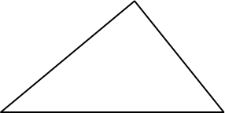

Suscríbete
Suscríbete
¿Cuál es el tamaño de un triángulo?
Supón que quieres saber lo grande es este triángulo:

O si es más grande o más pequeño que este otro:
¿Qué quiere decir tamaño cuando se refiere a un triángulo? Puede ser cuánta pintura necesitas para colorearlo, o cuántos kilos de semillas necesitas para cubrirlo de césped, o cuántas galletas rectangulares lo cubrirían. Todas estas medidas son arbitrarias, pero pueden tener sentido en determinadas ocasiones.
La medida arbitraria que solemos usar es: ¿cuántos cuadrados puedes meter en él? Tomas un cuadrado de un tamaño dado, por ejemplo de 1 m o de 1 km de lado, tratas de descubrir cuántos caben en el triángulo, y al número que te sale lo llamas área del triángulo. Este número no tiene por qué ser entero: lo normal es que necesites unos cuantos cuadrados y un trocito.
Llenar un triángulo de cuadrados no es fácil, porque los cuadrados tienen una lamentable tendencia a no encajar exactamente dentro de un triángulo. Por eso tenemos que pensar formas indirectas de hacerlo.
Los cuadrados no encajan bien en un triángulo, pero como van bien para llenar rectángulos podemos pensar en construir un rectángulo a partir de nuestro triángulo, así:

Como éste es el rectángulo más pequeño que contiene a nuestro triángulo, tenemos un rectángulo y un triángulo que están ligados entre sí: si hacemos el triángulo más grande, también el rectángulo que lo contiene tendrá que serlo.
¿No debería haber una relación entre el tamaño del triángulo y
el del rectángulo? Porque sabemos cómo medir un rectángulo:
multiplicamos sus lados, en este caso  . Si
pudiéramos encontrar la relación entre los dos tamaños la
usaríamos para saber el tamaño del triángulo.
. Si
pudiéramos encontrar la relación entre los dos tamaños la
usaríamos para saber el tamaño del triángulo.
Mira esta otra imagen, en la que he dibujado una línea que divide el triángulo (y el rectángulo) en dos partes:

¿Lo ves ya? Si no lo ves, prueba con esta otra:

Hemos dividido el rectángulo en otros dos más pequeños, el verde y el azul, y al mismo tiempo hemos dividido nuestro triángulo en dos triángulos más pequeños, también verde y azul. Cada uno de los triángulos pequeños es exactamente la mitad de su rectángulo.
En otras palabras: el tamaño de nuestro triángulo es
exactamente la mitad del tamaño de nuestro rectángulo. O sea
que para medir el triángulo lo único que tienes que hacer es
multiplicar su base  por su altura
por su altura  , y dividir por dos.
, y dividir por dos.
Pero espera un momento: este argumento no funciona para el otro triángulo que teníamos ahí arriba, el que queríamos comparar con nuestro triángulo:
Cierto, el argumento no aplica, pero la forma de medirlo
resulta ser la misma: multiplicamos , y dividimos
por dos. Pero tenemos que escoger la y con vista:
O sea que, si ésto es verdad, puedes mover horizontalmente el
vértice superior del triángulo todo lo que quieras, y el tamaño
del triángulo no cambiará mientras mantengas y
constantes.
Pero ¿es verdad? Es un ejercicio estupendo, así que igual te lo puedes pensar tú mismo. Pista.
blog comments powered by Disqus